Tiny Web Assistant (greasyfork.org)
提供了一个“存在感很强”的网页助手，可以和chatgpt沟通交流，并基于页面上的资料进行提问分析
试试效果
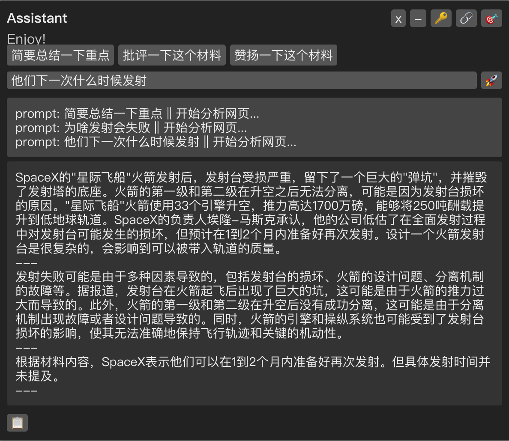
这个插件依赖大名鼎鼎的“油猴”，首先安装它的chrome版本(兼容edge)：Tampermonkey - Chrome 应用商店 (google.com)，当然也可以选择Firefox
打开一个网站，右上角会出现浮动条
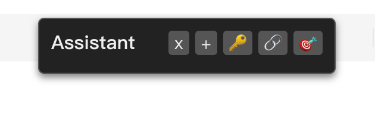
点击浮动条里的“+”可以展开面板
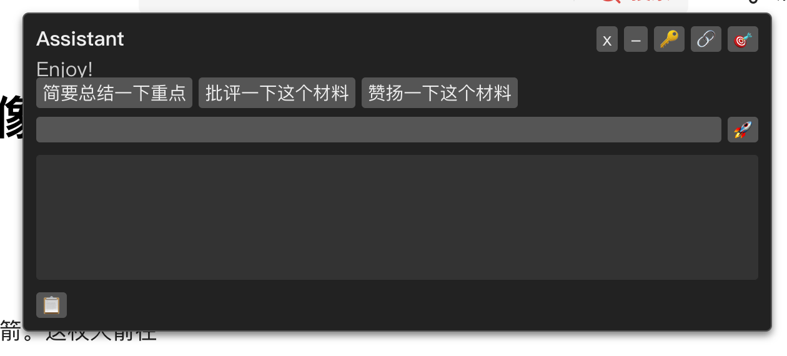
然后随便点击一条提示，或者自己提一个问题
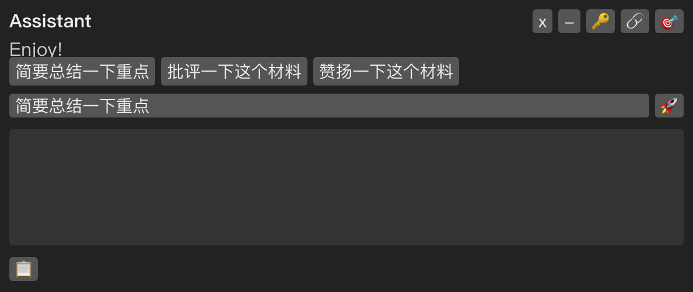
点击右侧“🚀”即可以开始分析，如果没有配置openai key会提醒配置，配置一个正确的openai key即可
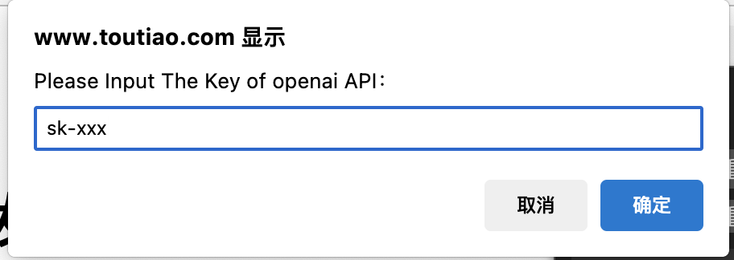
如果首次使用，会提醒需要允许访问openai的域名，在弹窗里点击“总是允许”即可
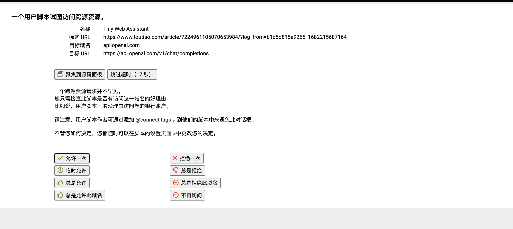
如果没有好的翻墙环境，可以点击🔗按钮，设置openai API服务的反向代理（需要自己搭建或者在网上搜索），在美团内网，可以配置为 http://openai.xlvecle.com/
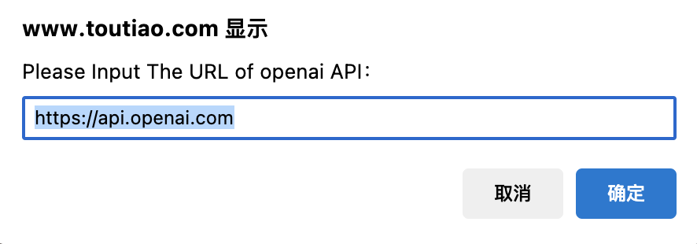
默认分析的对象是整个网页，网页上的内容如此多以至于会有很多脏信息，用这个网页作为案例：SpaceX星际飞船发射后 发射台就像被炸弹炸过-今日头条 (toutiao.com)
这个网站除了主体的新闻，还有侧边栏的热点等信息，直接分析容易造成干扰
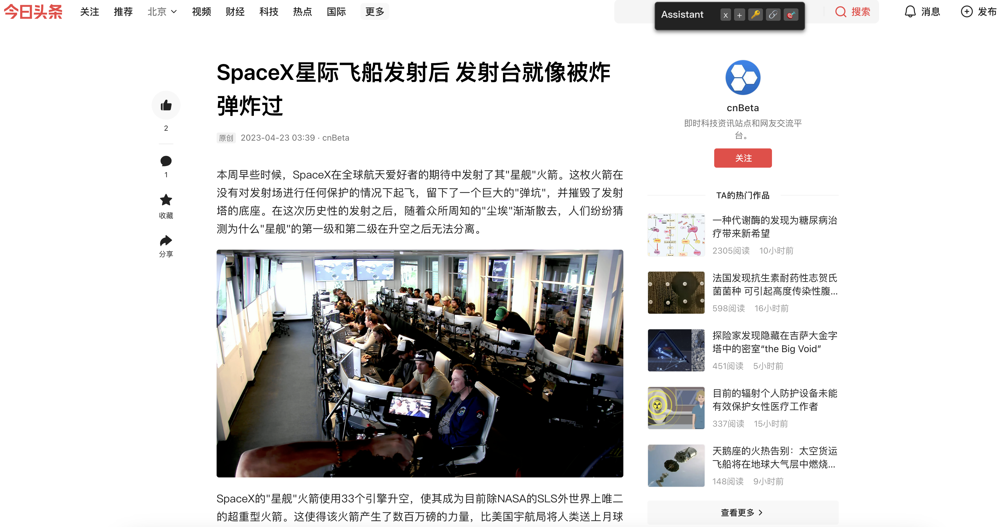
这种情况下我们需要设置选择器来缩小目标区域，点击“🎯”即可开始，可以配置一个HTML选择器“.article-content”（这里支持的是Document: querySelectorAll() method - Web APIs | MDN (mozilla.org)）
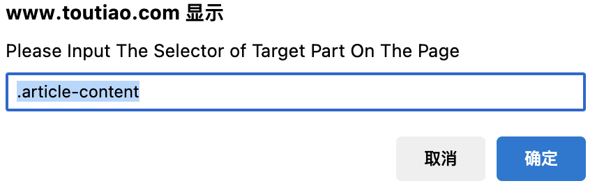
设置完之后就可以针对性提问了
另外左下角还有剪贴板可以复制输出信息
“我不想在每个网站上看到这个助手，怎么办？”
点击Tampermonkey图标打开管理面板，编辑TinyWebAssisttant脚本
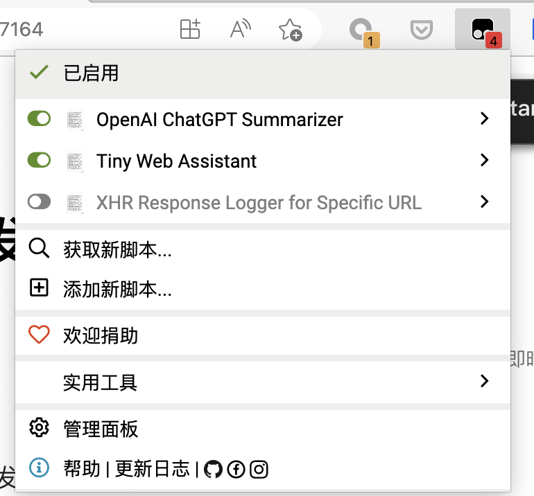
在设置里把“原始匹配”取消勾选，添加特定的用户匹配，例如头条新闻：*://*.toutiao.com/* 然后就可以只在这些网站生效了
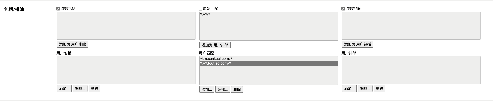
不支持连续对话
网页上的文本内容太多了，容易超出chatgpt容量限制，所以现在对于内容太多的网页会做机械拆分（均匀分割），然后分段进行分析
---